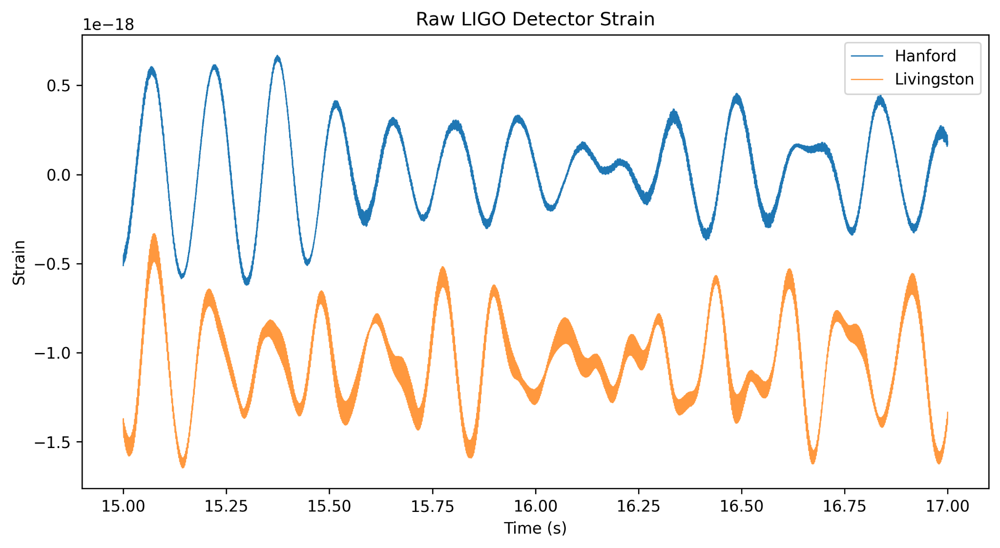
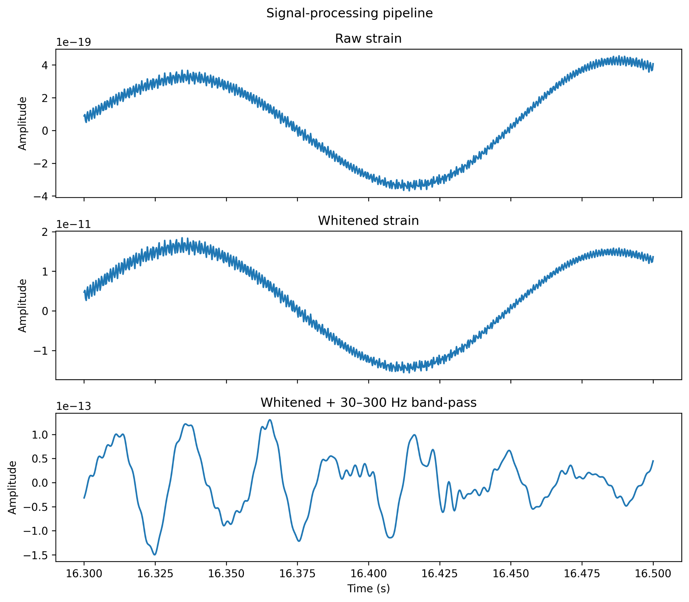

Extracting a weak transient signal from LIGO detector data
The event is difficult to see in raw strain data.
Gravitational-wave strain measurements are dominated by detector noise. I rebuilt the analysis as a Python pipeline using spectral whitening, zero-phase band-pass filtering and detector alignment.

Raw Hanford and Livingston detector strain around the event.
From raw signal to interpretable transient.
I used the detector noise spectrum to whiten the measurements, then applied a zero-phase Butterworth filter. Cross-correlation over the event region estimated the relative timing offset between observatories.

Raw, whitened and band-limited processing stages.
Tracking changing frequency content.
A focused spectrogram reveals the transient's changing frequency content through the event region, complementing the recovered time-domain waveform.
Tools: Python · NumPy · SciPy · h5py · HDF5 · FFT · PSD estimation · digital filtering · cross-correlation · spectrograms

Time-frequency analysis of the processed LIGO strain.